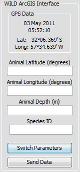
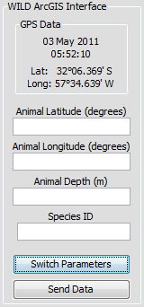

The WILD ArcGIS Interface module provides the user the ability to integrate PAMGuard with the WILD ArcGIS-based marine mammal survey software package. The module takes postional data from the GPS module and couples that with user-inputted information regarding marine mammal location to create a NMEA string. The string is then output to the WILD package through a serial port.
The NMEA string uses the CPAM format, defined on May 3, 2011 as:
$PSOCALPAM, date,time,lat,long,gyro,speed,dx0,dy0,dz0,animal,signal strength,signal duration,bearing,azimuth,distance, animal lat,animal long, animal depth*CS
where
Date: ddmmyy = Date of the observation leading zero padded e.g. 020408 represents 2nd day of April 2008.
Time: hhmmss.uuuuu represents UTC time of observation leading zero padded with fractional seconds to necessary accuracy based on the 24 hour clock
Lat: aa.aaaaa - estimated latitude of ship in decimal degrees WGS-84 Negative number represents Southern hemisphere. Domain = -90.00000 to 90.00000
Long: ooo.ooooo - longitude of ship decimal degrees WGS-84. Negative number represents Western Hemisphere. Domain = -180.00000 to 180.00000
Gyro: nnn.nn - true bearing in degrees of ship. Domain = 0 to 359.99 Degrees
Speed: ship speed through the water (Knots)
dx0,dy0,dz0: array offset (m)relative to GPS (ship) position; if empty assume 0
Animal: animal name (I would prefer name if that is OK, less chance of a problem). domain = UNK (unknown), PM (Physeter macrocephalus), ZC (Ziphius cavirostris), GME (Globicephalus melas), GMA Globicephala Macrohynchus) GG Grampus Griseus, DSP (Delphinidea), a null value is stored as "Not Specified" in the feature class.
Signal strength: domain = 1 - 3; 1 weak, 2 moderate, 3 strong.
Signal duration: domain = 1 short, 2 intermediate, 3 continuous.
Animal bearing: bearing of animal detection relative to ship bearing in degrees. Domain = 0 to 359.99
Animal Elevation (Azimuth): domain = -90.00 degrees (directly under array) to 90.00 degrees (directly over the array).
Distance: distance from animal to sensor (meters) (or ship if dx0,dy0, dz0 are zero or not reported)
Animal lat: Latitude of animal WGS-84 (decimal degrees) domain: 90.000 to -90.000
Animal Lon: Longitude of animal WGS-84 (decimal degrees) domain: 180.000 to -180.000
Animal Depth: Depth of the animal below local sea level (meters). Domain: 0 to depth of water column, positive number.
CS: check sum
From the File > Add Modules > Utilities menu, select "WILD ArcGIS Interface". Enter a descriptive name for the new module and press OK.
Select Detection > WILD ArcGIS Interface on the toolbar to open the parameters dialog, shown below.
The GPS Source dropdown box contains a list of GPS modules that have been previously configured. In order to pass GPS data to the WILD package, a valid GPS source must be selected. If no source is selected or the GPS data is not available, blank values will be used in the NMEA string.
The serial port connected to the WILD software package must be configured in order to properly pass the NMEA string.
The NMEA strings can also be saved to a csv file, the name and location of which can be specified by the user. Each string is appended to the csv file as a new row after being output to the serial port.
 

The side bar displays information from the GPS source, as well as text fields to allow the operator to locate the animal. The animal location parameters will be either Bearing Angle, Azimuth and Distance or Animal Latitude, Animal Longitude and Animal Depth. Pressing the Switch Parameters button will toggle between the two sets of parameters. Pressing the Send Data button will compile the NMEA string and send it to the output serial port.
Note that if an invalid value is entered into a text field, such as a character instead of a number or a number outside the allowable range, the value is replaced with 0.
Note also that the text fields are cleared after sending the data, in preparation of the next detection.